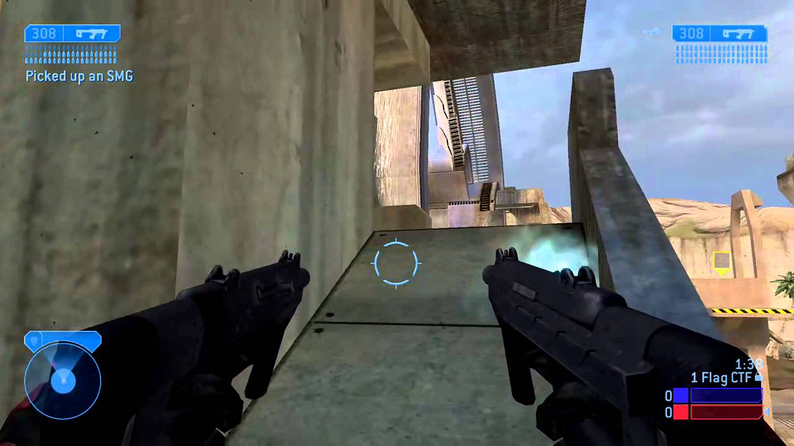
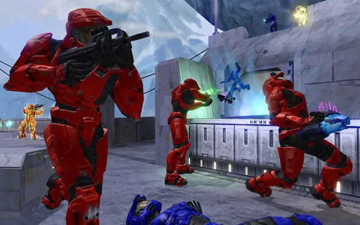
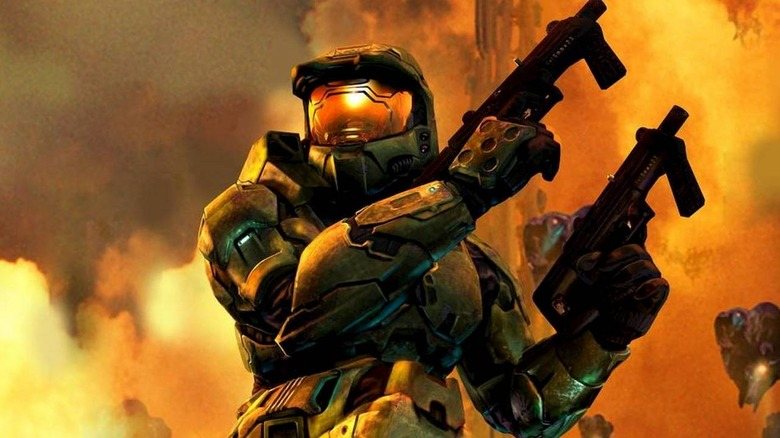

Halo 2 is a 2004 first-person shooter game developed by Bungie and published by Microsoft Game Studios for the Xbox console. Halo 2 is the second installment in the Halo franchise and the sequel to 2001's critically acclaimed Halo: Combat Evolved. The game features new weapons, enemies, and vehicles, another player character, and shipped with online multiplayer via Microsoft's Xbox Live service. In Halo 2's story mode, the player assumes the roles of the human Master Chief and alien Arbiter in a 26th-century conflict between the United Nations Space Command, the genocidal Covenant, and the parasitic Flood.
After the success of Halo: Combat Evolved, a sequel was expected and highly anticipated. Bungie found inspiration in plot points and gameplay elements that had been left out of their first game, including online multiplayer. A troubled development and time constraints forced cuts to the scope of the game, including the wholesale removal of a more ambitious multiplayer mode, and necessitated a cliffhanger ending to the game's campaign mode. Among Halo 2's marketing was an early alternate reality game called "I Love Bees" that involved players solving real-world puzzles. Bungie supported the game after release with new multiplayer maps and updates to address cheating and glitches. The game was followed by a sequel, Halo 3, in September 2007.
Halo 2 was a commercial and critical success and is often listed as one of the greatest video games of all time. The game became the most popular title on Xbox Live, holding that rank until the release of Gears of War for the Xbox 360 nearly two years later. Halo 2 is the best-selling first-generation Xbox game, with more than 8 million copies sold worldwide. The game received critical acclaim, with the multiplayer lauded; in comparison, the campaign and its cliffhanger ending was divisive. The game's online component was highly influential and cemented many features as standard in future games and online services, including matchmaking, lobbies, and clans. Halo 2's marketing heralded the beginnings of video games as blockbuster media. A port of the game for Windows Vista was released in 2007, followed by a high-definition remake as part of Halo: The Master Chief Collection in 2014.
Gameplay

Halo 2 is a shooter game. Players primarily experience gameplay from a first-person perspective, with the viewpoint shifting to third-person for vehicle segments. Players use a combination of human and Covenant weaponry and vehicles to progress through the game's levels. Certain weapons can be dual-wielded, allowing the player to trade accuracy, the use of grenades, and melee attacks for raw firepower. The player can carry two weapons at a time (or three if dual-wielding, with one weapon remaining holstered), with each weapon having strengths in different combat situations. Most Covenant weapons, for example, eschew disposable ammo magazines for a contained battery, which cannot be replaced once depleted. However, these weapons overheat if fired continuously. Human weapons are less effective at penetrating shields and require reloading ammunition, but cannot overheat due to prolonged fire. Players can hijack enemy vehicles and quickly assume control of them. The player is equipped with a damage-absorbing shield that regenerates when not taking fire; their health bar is not visible.
The game's "Campaign" mode offers options for both single-player and cooperative multiplayer participation. In campaign mode, the player must complete a series of levels that encompass Halo 2's storyline. These levels alternate between the Master Chief and a Covenant Elite called the Arbiter, who occupy diametrically opposed roles in the story's conflict. Aside from variations in storyline, the Arbiter differs from Master Chief only in that his armor lacks a flashlight; instead, it is equipped with a short duration rechargeable form of active camouflage that disappears when the player attacks or takes damage. There are four difficulty levels in campaign mode: Easy, Normal, Heroic, and Legendary. An increase in difficulty will result in an increase in the number, rank, health, damage, and accuracy of enemies; a reduction of duration and an increase in recharge time for the Arbiter's active camouflage; a decrease in the player's health and shields; and occasional changes in dialogue. Enemy and friendly artificial intelligence is dynamic, and replaying the same encounters repeatedly will demonstrate different behavior.
Multiplayer

Like Halo: Combat Evolved, the Xbox version of Halo 2 features a multiplayer system that allows players to compete with each other in split-screen and system link modes; in addition, it added support for online multiplayer via Xbox Live. The Xbox Live multiplayer and downloadable content features of the Xbox version of Halo 2 were supported until the discontinuation of the service in April 2010, with the final multiplayer session concluding May 10, almost a month after the service was officially terminated. Multiplayer for the PC version of the game used Games for Windows – Live. PC multiplayer servers were taken offline in June 2013.
Instead of implementing multiplayer by having players manually join lobbies, as was common in games at the time, Halo 2 used matchmaking. Players chose the general type of match they want to play, and the game selected the map and gametype and automatically found other players. This "playlist" system automated the process of finding matches to keep a steady flow of games available at all times, and combined a skill-ranking system on top.
Story

Setting
Halo 2 takes place in the 26th century. Humans, under the auspices of the United Nations Space Command or UNSC, have developed faster-than-light slipspace travel and colonized numerous worlds. Human worlds come under attack by a collective of alien races known as the Covenant. Declaring humanity an affront to their gods, the Forerunners, the Covenant begin to obliterate the humans with their superior numbers and technology. After the human planet Reach is destroyed, a single ship, The Pillar of Autumn, follows protocol and initiates a random slipspace jump to lead the Covenant away from Earth. The crew discovers a Forerunner ringworld called Halo. Though the Covenant believe Halo's activation will lead to divine salvation, the humans discover that the rings are actually weapons, built to contain a terrifying parasite called the Flood. The human supersoldier Master Chief Petty Officer John-117 and his AI companion Cortana learn from Halo's AI monitor, 343 Guilty Spark, that activation of the Halos will destroy all sentient life in the galaxy to prevent the Flood's spread. Instead of activating the ring, Master Chief and Cortana detonate the Pillar of Autumn's engines, destroying the installation and preventing the escape of the Flood. Master Chief and Cortana race back to Earth to warn of an impending invasion by Covenant forces.
Plot
Halo 2 opens with the trial of a Covenant Elite commander aboard the Covenant's capital city-ship of High Charity. For his failure to stop Halo's destruction, the Elite is stripped of his rank, branded a heretic, and tortured by Tartarus, the Chieftain of the Covenant Brutes. Spared execution, the Covenant leadership—the High Prophets Truth, Regret, and Mercy—give the Elite the chance to become an Arbiter, a rank given to Elites in times of great crisis or turmoil. As the Arbiter, the Elite quells a rebellion and recovers 343 Guilty Spark.
On Earth, Fleet Admiral Hood commends the Master Chief and Sergeant Avery Johnson for their actions at the first Halo, with Commander Miranda Keyes accepting a medal on behalf of her deceased father, Captain Jacob Keyes. A Covenant fleet suddenly appears near Earth. In the ensuing battle, a single ship carrying the Prophet of Regret slips through Earth's defenses and besieges the African city of New Mombasa. Master Chief assists in repelling the invasion. With his fleet destroyed, Regret makes a hasty slipspace jump, and Keyes, Johnson, Cortana, and the Master Chief follow aboard the UNSC ship In Amber Clad. The crew discovers another Halo installation; realizing the danger the ring presents, Keyes sends Master Chief to kill Regret while she and Johnson search for the Index, Halo's activation key.
Responding to Regret's distress call, High Charity and the Covenant fleet arrive at the Halo. After Master Chief kills Regret, the Covenant bombard his location; he falls into a lake, where he is dragged away by tentacles. Regret's death triggers discord among the races of the Covenant, as the Prophets give the Brutes the Elites' traditional role as their honor guard. The Arbiter subdues Johnson and Keyes and retrieves the Index. Tartarus appears and reveals that the Prophets have ordered the annihilation of the Elites, and sends the Arbiter falling down a deep chasm.
The Arbiter meets the Master Chief in the bowels of the Halo, brought together by a Flood creature called the Gravemind. The Gravemind reveals to the Arbiter that the Great Journey is a lie, and sends the two soldiers to different places to stop Halo's activation. The Master Chief is teleported to High Charity as the Covenant falls into civil war. The Flood-infested In Amber Clad crashes into the city, and Cortana realizes that the Gravemind used them as a distraction. As the parasite overruns the city, the Prophet of Mercy is consumed. As for Tartarus, the Prophet of Truth consigns him to Halo with Keyes, Johnson, and Guilty Spark to activate the ring. Master Chief follows Truth aboard a Forerunner ship leaving the city; Cortana remains behind to destroy High Charity and Halo if Tartarus succeeds in activating the ring.
On the surface of Halo, the Arbiter joins forces with Johnson and confronts Tartarus in Halo's control room. When the Arbiter tries to convince Tartarus that the Prophets have betrayed them, Tartarus instead activates the ring, and a battle ensues. The Arbiter and Johnson kill Tartarus while Keyes removes the Index; the unexpected deactivation sets Halo and all the other rings on standby for remote activation from a place 343 Guilty Spark calls "the Ark." Meanwhile, Truth's ship arrives at Earth, and Master Chief informs Admiral Hood that he is "finishing this fight."
In a post-credits scene, Gravemind assumes control of High Charity. Cortana agrees to answer the Flood intelligence's questions.